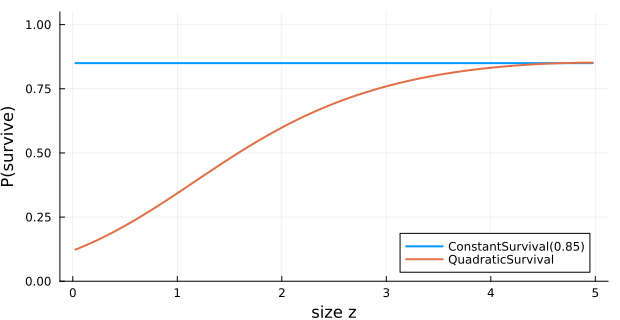

Kernel Composition and Helpers
Overview
This vignette walks through kernel composition (+, ComposedKernel, CustomKernel), alternative vital-rate types (ConstantSurvival, QuadraticSurvival, LogisticFecundityRate, RecruitmentDistribution), the lower-level helpers used inside the kernels (truncated_growth, apply_discrete_extrema!, proportion_to_rate, rate_to_proportion, mean_size), the population-construction helpers (normal_population, point_population, n_states), and the SciML interop helper to_discrete_problem together with IntegralProjectionModels.remake.
Setup
using IntegralProjectionModels
using Distributions
using LinearAlgebra
using Statistics
using PlotsDomain and population helpers
L_, U_ = 0.0, 5.0
m = 100
domain = ContinuousDomain(L_, U_, m)
println("n_states(domain) = ", n_states(domain))
println("step_size(h) = ", round(step_size(domain), digits=4))
println("bounds = ", bounds(domain))
n_normal = normal_population(domain, 2.5, 0.5)
n_point = point_population(domain, 1.7)
println("∑ n_normal = ", round(sum(n_normal), digits=4),
" ∑ n_point = ", round(sum(n_point), digits=4))n_states(domain) = 100
step_size(h) = 0.05
bounds = [0.0, 0.05, 0.1, 0.15, 0.2, 0.25, 0.3, 0.35, 0.4, 0.45, 0.5, 0.55, 0.6, 0.65, 0.7, 0.75, 0.8, 0.85, 0.9, 0.95, 1.0, 1.05, 1.1, 1.15, 1.2, 1.25, 1.3, 1.35, 1.4, 1.45, 1.5, 1.55, 1.6, 1.65, 1.7, 1.75, 1.8, 1.85, 1.9, 1.95, 2.0, 2.05, 2.1, 2.15, 2.2, 2.25, 2.3, 2.35, 2.4, 2.45, 2.5, 2.55, 2.6, 2.65, 2.7, 2.75, 2.8, 2.85, 2.9, 2.95, 3.0, 3.05, 3.1, 3.15, 3.2, 3.25, 3.3, 3.35, 3.4, 3.45, 3.5, 3.55, 3.6, 3.65, 3.7, 3.75, 3.8, 3.85, 3.9, 3.95, 4.0, 4.05, 4.1, 4.15, 4.2, 4.25, 4.3, 4.35, 4.4, 4.45, 4.5, 4.55, 4.6, 4.65, 4.7, 4.75, 4.8, 4.85, 4.9, 4.95, 5.0]
∑ n_normal = 1.0 ∑ n_point = 1.0Rate ↔ proportion conversions
These small utilities convert between continuous-time rates and discrete-time probabilities under the standard exponential model.
p = 0.4
r = proportion_to_rate(p)
println("proportion_to_rate(0.4) = ", round(r, digits=5))
println("rate_to_proportion(r) = ", round(rate_to_proportion(r), digits=5))proportion_to_rate(0.4) = 0.51083
rate_to_proportion(r) = 0.4Alternative vital-rate types
ConstantSurvival ignores size; QuadraticSurvival adds a $z^2$ term to the logistic regression.
s_const = ConstantSurvival(0.85)
s_quad = QuadraticSurvival(-2.0, 1.5, -0.15)
z = meshpoints(domain)
plot(z, s_const.(z), lw=2, label="ConstantSurvival(0.85)")
plot!(z, s_quad.(z), lw=2, label="QuadraticSurvival",
xlabel="size z", ylabel="P(survive)", ylims=(0, 1.05),
size=(620, 320))
LogisticFecundityRate separates probability of reproducing from per-capita seed output. RecruitmentDistribution is a parent-independent recruit-size distribution.
fec = LogisticFecundityRate(-3.0, 1.2, 0.0, 0.4, 1.0, 0.3)
rec = RecruitmentDistribution(1.0, 0.3)
println("fec(1.0, 4.0) = ", round(fec(1.0, 4.0), digits=6))
println("rec(1.0) = ", round(rec(1.0), digits=6))
println("rec(1.0, 4.0) = ", round(rec(1.0, 4.0), digits=6), " (parent-independent)")fec(1.0, 4.0) = 5.652267
rec(1.0) = 1.329808
rec(1.0, 4.0) = 1.329808 (parent-independent)Eviction-correction helpers
truncated_growth evaluates a growth kernel after dividing the density by the probability mass within the domain — used by PKernel when eviction = TruncatedDistributions. mean_size returns the mean of a NormalGrowth kernel at a given parent size.
g = NormalGrowth(0.4, 0.9, 0.4)
println("mean_size(g, 2.0) = ", round(mean_size(g, 2.0), digits=4))
println("g(3.5, 2.0) raw = ", round(g(3.5, 2.0), digits=6))
println("truncated_growth(g, 3.5, 2.0) = ",
round(truncated_growth(g, 3.5, 2.0, domain), digits=6))mean_size(g, 2.0) = 2.2
g(3.5, 2.0) raw = 0.005073
truncated_growth(g, 3.5, 2.0) = 0.005073apply_discrete_extrema! redistributes lost probability mass to the boundary cells so that column sums equal one — the discrete-extrema eviction scheme.
K_demo = zeros(5, 5)
K_demo[2:4, :] .= 0.2
println("column sums before: ", round.(sum(K_demo, dims=1)[:], digits=3))
apply_discrete_extrema!(K_demo)
println("column sums after : ", round.(sum(K_demo, dims=1)[:], digits=3))column sums before: [0.6, 0.6, 0.6, 0.6, 0.6]
column sums after : [1.0, 1.0, 1.0, 1.0, 1.0]Composed kernels
Adding sub-kernels with + produces a ComposedKernel. Adding more sub-kernels keeps the result flat (no nested ComposedKernel).
surv = LinearSurvival(-2.0, 0.6)
P = PKernel(surv, g, domain; eviction = TruncatedDistributions)
F = FKernel(fec, domain)
K_PF = P + F
K_PFF = P + F + F
println("typeof(K_PF) = ", typeof(K_PF).name.name)
println("typeof(K_PFF) = ", typeof(K_PFF).name.name)
println("# subkernels in K_PFF = ", length(K_PFF.subkernels))typeof(K_PF) = ComposedKernel
typeof(K_PFF) = ComposedKernel
# subkernels in K_PFF = 3Custom kernels
CustomKernel lets you supply any function f(z′, z) (with optional params) as a sub-kernel — useful for special models where neither PKernel nor FKernel fits.
ck = CustomKernel((zp, z) -> exp(-(zp - z)^2 / 0.5), domain; family = CC)
M = materialize(ck)
println("typeof(ck) = ", typeof(ck).name.name)
println("size(M) = ", size(M),
" sum(M[:,50]) ≈ ", round(sum(M[:, 50]), digits=4))typeof(ck) = CustomKernel
size(M) = (100, 100) sum(M[:,50]) ≈ 1.2533A composed model
n0 = normal_population(domain, 2.0, 0.6)
prob = IPMProblem(SimpleIPM(), DensityIndependent(), Deterministic(),
P + F, domain, n0, (0, 50))
sol = solve(prob)
println("λ = ", round(sol.eigenanalysis.lambda, digits=4))λ = 0.6684remake clones the problem with overridden fields. Because several SciML packages also export remake, qualify the call:
prob_long = IntegralProjectionModels.remake(prob; tspan=(0, 200))
println("new tspan = ", prob_long.tspan)new tspan = (0, 200)SciML interop: to_discrete_problem
to_discrete_problem converts an IPMProblem into a SciMLBase DiscreteProblem whose RHS is the kernel multiplication. It is the bridge that lets you reuse the SciML solver stack on IPM dynamics — useful when embedding an IPM inside a larger coupled model.
dprob = to_discrete_problem(prob)
println("typeof(dprob).name.name = ", typeof(dprob).name.name)
println("length(dprob.u0) = ", length(dprob.u0))
println("dprob.tspan = ", dprob.tspan)typeof(dprob).name.name = DiscreteProblem
length(dprob.u0) = 100
dprob.tspan = (0.0, 50.0)Summary
+on sub-kernels builds a flatComposedKernel;CustomKernelcovers one-off functional forms.ConstantSurvival,QuadraticSurvival,LogisticFecundityRate, andRecruitmentDistributionround out the standard vital-rate library.truncated_growthandapply_discrete_extrema!are the building blocks of the eviction-correction strategies.proportion_to_rate/rate_to_proportion,mean_size,n_states,normal_population,point_populationcover the small-but-essential helper surface.to_discrete_problemandIntegralProjectionModels.remakeconnect the IPM problem to the SciML ecosystem.